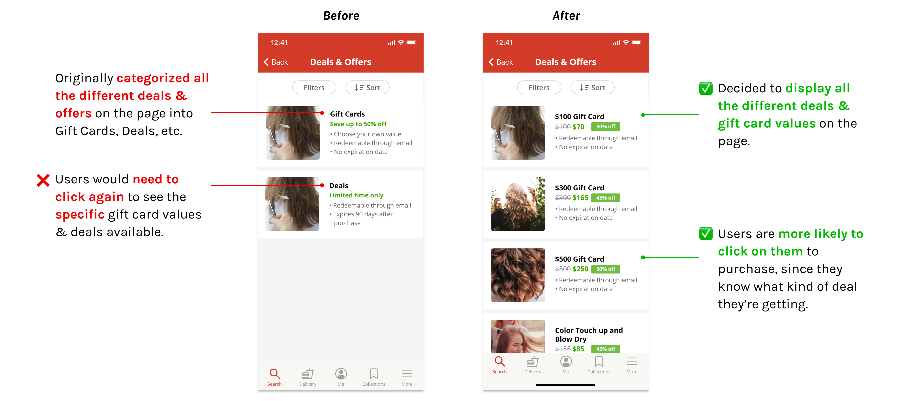

Expanded on the Yelp appointment feature to streamline the process of booking at store & at home appointments.
My Responsibilites: Conducted user research & usability testing, created personas, paper prototypes & iterated on low to high-fidelity prototypes.
Duration: Jun - Sep 2020 (10 weeks)
Role: Product Designer
Tools: Figma, Marvel, Miro
This past summer, I participated in Design Co's Level Up fellowship. Level Up is a 10-week design program that provides students with the opportunity to tackle a real-world challenge and network with experienced industry professionals. Participants worked in teams of four to produce a website showcase of project deliverables with the guidance of industry mentors.

My team decided to focus on Designing for Small Business Recovery. We wanted to explore possible solutions to help small businesses recover due to the COVID-19 pandemic, as a way to give back to these services that have played a huge part of our daily lives.
As people are adjusting to the new norms of everyday life during the pandemic, a lot of small businesses in the personal services sector are struggling to make ends meet as they are seeing a decline in their customers and as a result, their finances. There’s a fair amount of uncertainty over COVID-19 for both the customers and workers of hair and nail salons, and it’s resulted in an increasing sense of distrust on the customer side, and an overall disconnect between the two.
Before choosing a sector to focus on, we talked to several different business owners about the current obstacles they were facing, and some of our insights include a lot of general uncertainty around the situation and inability to plan as a result, financial difficulty due to not having a backup plan, and also difficulty in transitioning to an online presence in order to communicate with their customers.
“It would be nice if there’s any way to announce our cleaning protocol is 100% in effect so we can rebuild some trust with our customers.”
After conducting some initial background research, we decided to focus on the personal services sector for several reasons:
We wanted to hear about what some of the real obstacles that small business owners are struggling with in their day to day since COVID-19 struck and were fortunate enough to be able to routinely talk to 4 small business owners throughout the process. In addition, we sent out surveys on social media platforms, such as Reddit and Facebook, to really grasp the pain points on the consumer side.
In the realm of personal service businesses, many owners' ability to work and run their business has decreased. Their challenges include:
We wanted to learn about the users’ pain points, needs, and reasons why they are not resuming use of personal care services. After conducting Zoom interviews, the most popular responses were:
Small businesses are taking one of the biggest hits from the pandemic. It was apparent that COVID-19 created a drift of disconnection between small businesses and their customers, leaving them both in a place of apprehension.
“An online presence would really be helpful, but we don’t know where to start with that.”
After conducting user research, our main findings helped narrow down our problem statement. Consumers aren’t sure of how small businesses in personal services are taking precautions against COVID-19, while owners of small businesses have lack of experience and have put creating an online presence in the back burner of other COVID-19 obstacles.
Our initial idea was an in-app tutorial + discovery platform where customers can look for personal service businesses in their area — to be able to get information and book from there, and a place where owners can directly register their business (an online presence made easy).
I sketched out low-fidelity paper prototypes and conducted user testing using Marvel. But through the first rounds of user testing, 75% of our users felt limited when using the app. They needed to find more value in the app and only understood part of the concept - locating businesses, instead of informing the public of small businesses in personal care and how they are adjusting to the new norm with their services.

Since not a lot of users found this app valuable enough to download it in the app store, we knew we had to reorient our direction.
We chose to create new opportunities on Yelp because it has a high existing user base, with over 28 million downloads a month. Already connecting people to their local businesses, improving upon the interactiveness and communicative aspect of their existing appointment feature was something we saw great potential in.
Yelp currently offers two options regarding appointments: requesting an appointment (similar to requesting a quote) and booking through a third party app (which isn't available to all businesses). Our redesign aims to allow users to book appointments directly in the Yelp app and offers a new option to book At Home appointments.
In addition, we expanded on Yelp’s “Deals & Offers” feature to better incorporate gift cards, allowing users to purchase directly in-app. This is to help cash flow concerns due to less customers coming in for the duration of the pandemic.
“I would use this over Google because it feels like it offers everything. I don’t have to go to a different website to check COVID updates, hours and book appointments.” -User Testing Participant
After we conducted user testing on our mid-fidelity prototype, we had to make some changes to improve our designs based on user feedback. We wanted to every iteration to be user driven.
We wanted to present the information for At Home Appointments in a way that didn't overwhelm the user, but also adhered to Yelp's design system.

We originally had a one page booking form, but after user testing, we decided to change it to a step by step booking process with less questions on each page.

We were thinking about where we should put the page to view and manage appointments. We conducted more research around our ideas and it helped us finalize our design decision.

We also wanted to add a way to buy gift cards onto the business page directly, instead of finding deals and offers in the More tab.
We adhered mainly to Yelp’s publicly released style guide since we wanted to incorporate our features seamlessly into the current app. Some changes we made included cutting down on the additional shades of blues and greens. Both were similar shades, with no clear semantic differentiation in how they’re currently used in the Yelp app.
Instead we introduced teal as a primary color to limit the color palette, since we found those particular shades of green clashed visually with the Yelp red. Our visual designer also created new illustrations that matched Yelp's branding.
A seamless booking process directly in the Yelp app, with options to have your appointment at store or at the comfort of your home. The safety precautions followed will reflect on the screen depending on the type of appointment you select.
Choose from a list of hair services, schedule your appointment with an easy to view calendar, add any additional notes, and review your information before confirming your appointment.

Three different ways to view your booked appointment:

To further financially support the businesses during this time, we added a Deals and Offers banner directly accessible on the business page.
Users can purchase gift cards and other deals in the app, helping businesses increase their cash flow during these difficult times.
After 10 weeks, we presented our slidedeck to industry professionals and the other Level Up participants at the final showcase, and walked them through our final prototype. We were awarded "Thoughtful Adoption Strategy" for our thoughtful and seamless concept integration into Yelp that would be beneficial to both small business owners and Yelp.
Since we were working on this project remotely, it was important to communicate clearly and effectively with everyone to make sure we're all on the same page. I asked everyone to participate in daily stand-ups on Slack by sending a quick message on what they've been working on, what they're planning on working on next, and if they had any blockers that anyone else on the team could help with. This helped us easily assess where everyone is at in the project and allowed us to work together efficiently across the distance.
I worked closely with the other product designer on the team and bounced ideas back and forth. However, we didn't always agree or were indecisive about how to design something. I learned that it was easier to draft a quick mockup or prototype of our ideas and compare them visually as a way to help settle conflicts quickly.
If we had more time, we would explore more features we could potentially add to our prototype, such as: